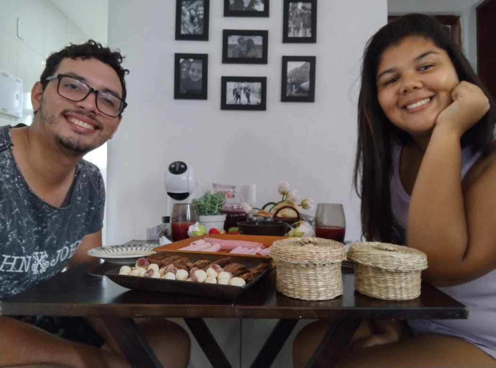
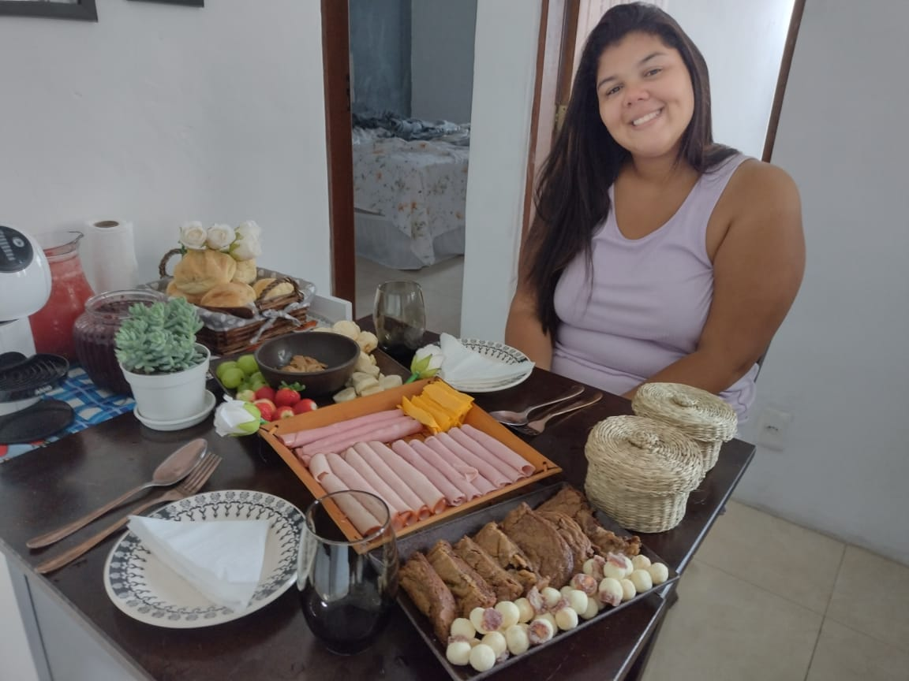
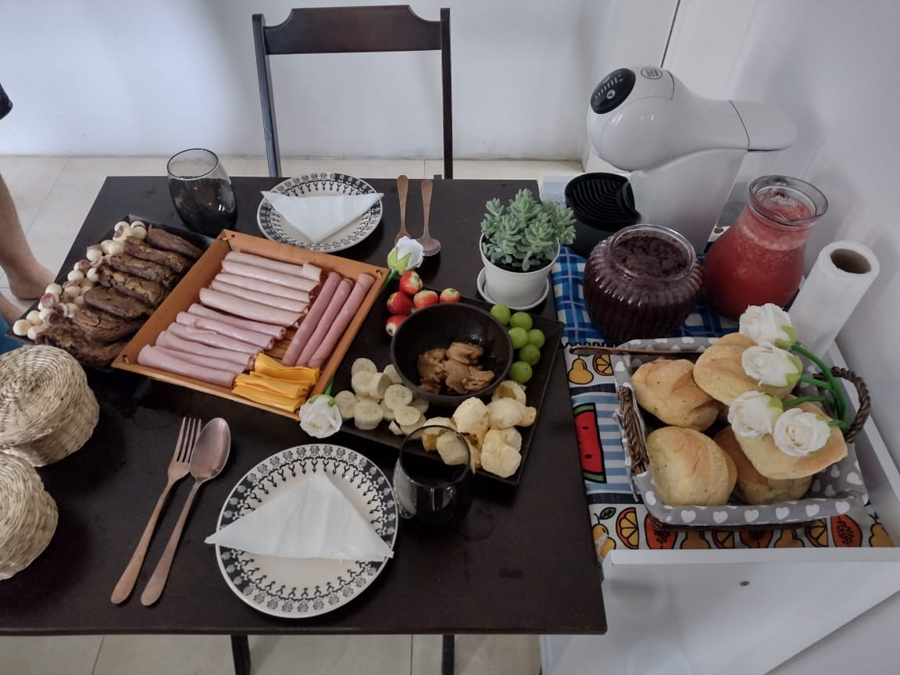

Você quis ver o café né hihihi
Esse foi um dia muito especial, eu fiz um super café da manhã para minha rainha, ela gostou tanto que até chorou. Isso foi no dia 02/04/2022, mais conhecido como dia do aniversário dela.
Ela amou!
Para provar que ela amou, ta ai ela com cara de choro de alegria hihihi.
Com um café desses até eu choraria .